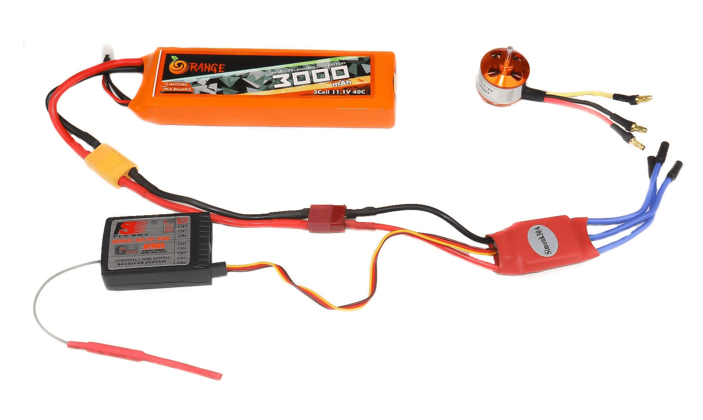

1. 核心元件介紹 (Core Components)
無刷馬達 (Brushless Motor)
無刷馬達是一種利用電子換向代替機械電刷的馬達，具有高效率與長壽命的特點。它需要接收三相交流電才能運轉。

圖示：無刷馬達 (Brushless Motor)
電子變速器 (Electronic Speed Controller, ESC)
電子變速器的功能是將電池的直流電 (Direct Current, DC) 轉換為無刷馬達所需的三相交流電 (Alternating Current, AC)，並根據接收器的訊號控制馬達轉速。

圖示：電子變速器 (ESC)
鋰聚合物電池 (Lithium Polymer Battery, LiPo)
電池規格中的 S 代表電池芯的串聯 (Series)。每個鋰電池芯的標準電壓約為 3.7V。
- 1S 電池：單芯，電壓 3.7V。
- 2S 電池：雙芯串聯，電壓 7.4V。
- 3S 電池：三芯串聯，電壓 11.1V。馬達與 ESC 必須支援此電壓範圍才能使用 3S 電池。